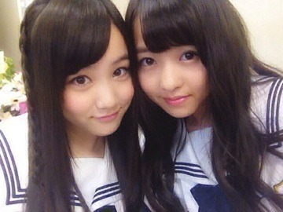

| 2013/09 28 Sat | 498回目*marika |
あらら
ブログの番号ひとつ抜けてました。
コメントでアメブロの分かな？
って言う方多かったけど
そんなズルはしない！
おれ、そんなズルしない
 ！
！
ちょっとぼけてたみたい。
ブログの内容もなんか変だったし笑
ぼーっとしてました。

今日は
GirlsAward 2013
AUTUMN / WINTER
ライブで出演しました。
♪制服のマネキン
♪おいでシャンプー
♪ガールズルール
女の子いっぱい！
黄色い声援がすごく嬉しかった。
前回も乃木坂46は出演したのですが
前回も乃木坂46は出演したのですが
私は出られなかったので、
嬉しかったーーー
今回はメンバー9人がモデルとして
今回はメンバー9人がモデルとして
ランウェイを歩いて、
客席から見てたのですが
みんなすごいかわいかった。
いつか出てみたいな。
と、
いつか出てみたいな。
と、
密かに思いました。
ファッションすきだし、
ファッションすきだし、
かわいいものだいすきだし、
こういうイベントに出られるって
とっても幸せ


東北楽天ゴールデンイーグルス
球団創設9年目で初優勝おめでとうございます！！
球団創設9年目で初優勝の年に
球団創設9年目で初優勝の年に
わたしたちがサポーターになるなんて
運命を感じます。
嬉しい！やったー

............
見た方もいるかと思いますが！
............
見た方もいるかと思いますが！
タウンワーク バイト日本代表！
美しいラッピング日本代表
として、真夏と一緒に挑戦しました。
あと、恥ずかしながら
あと、恥ずかしながら
バイトシチュエーション一言
もやりました。
みなさん是非見てください
さっき真夏から盗撮された寝顔
みなさん是非見てください
さっき真夏から盗撮された寝顔
送られてきたんだけど
とても載せられるような
顔面じゃなかった。
返信にスタンプ連続
返信にスタンプ連続
押してやったぜ！っへ
うるさいって言われたぜ。
明日は名古屋個別握手会ですね。
うるさいって言われたぜ。
明日は名古屋個別握手会ですね。
残念なから私は欠席します。
ごめんなさい。
明日行く方は
明日行く方は
楽しんできてくださいね

前回のブログから写真
前回のブログから写真
大きくしたんだけど、
今までの写真押したら
大きくなるのより
こっちの方がいいのかな？
どっちがいい？！

まりか
まりか
コメント(306)
2013/09/28 21:30